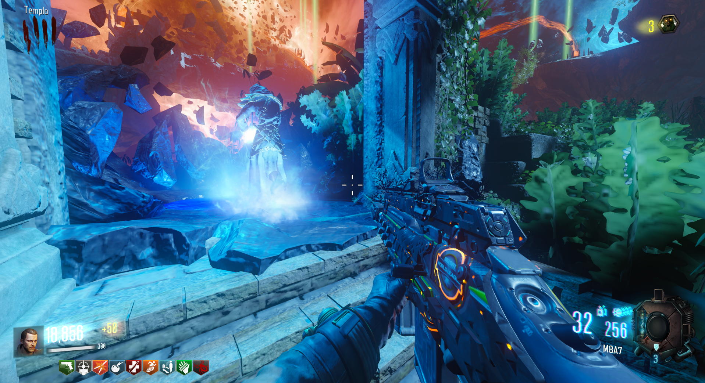
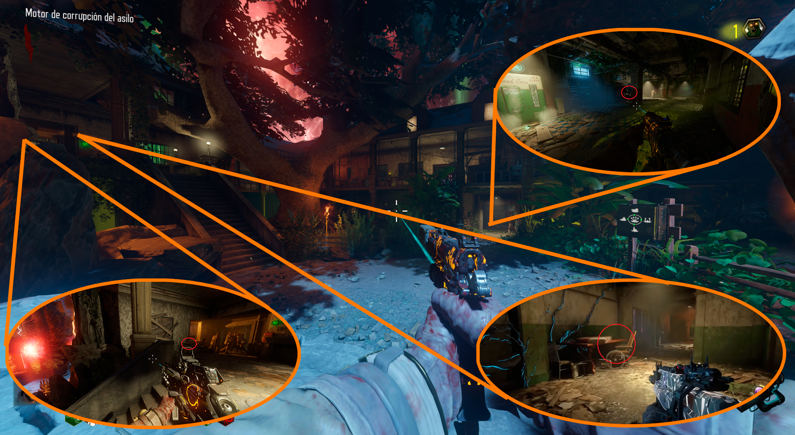
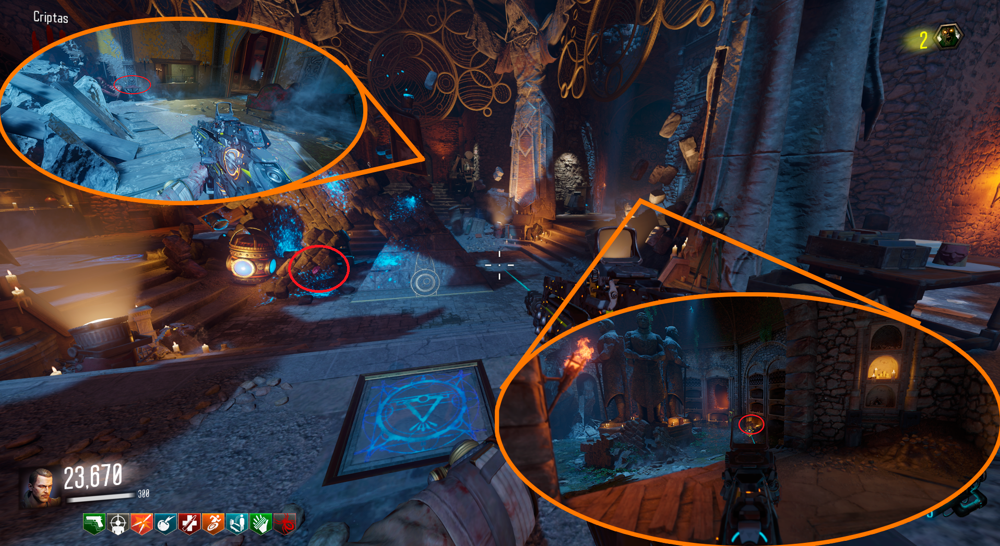
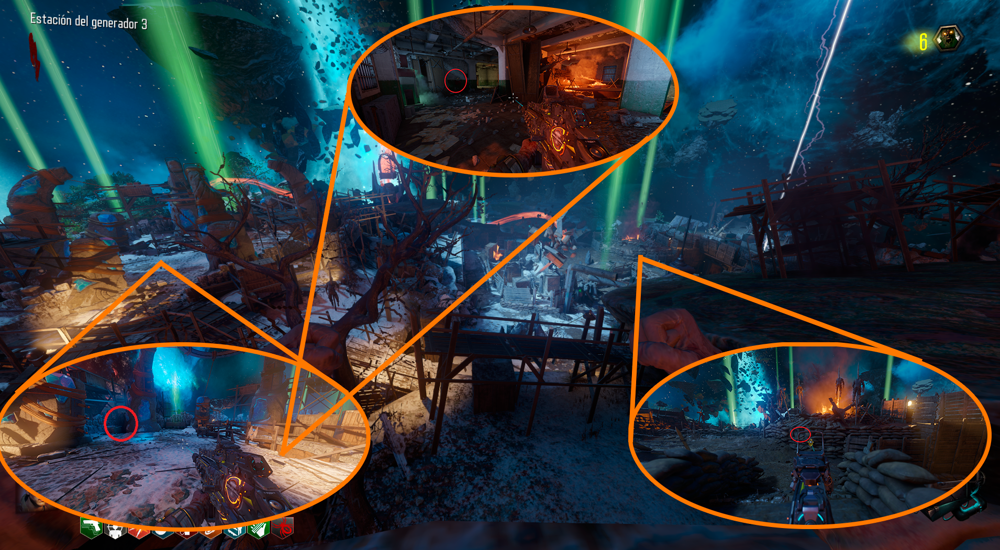
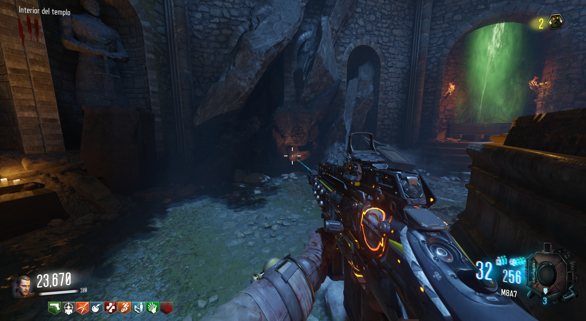
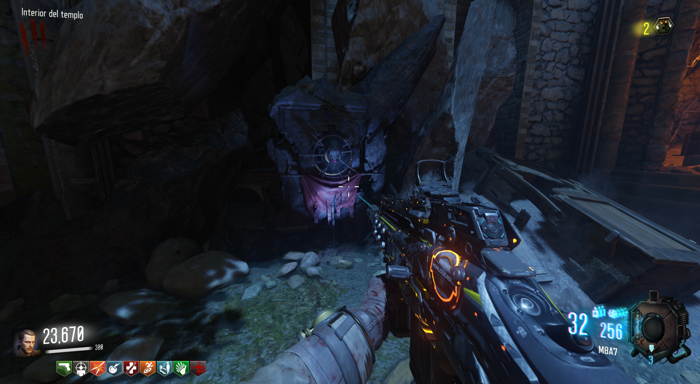

Altar del Keeper (Revelations)

Primera parte: En Verrückt.

Segunda parte: En Der Eisendrachen.

Tercera parte: En Origins.

Fabricar: Existen diversos lugares donde montar el keeper.

Y con esto podremos invocar al Keeper por 5000 puntos.
